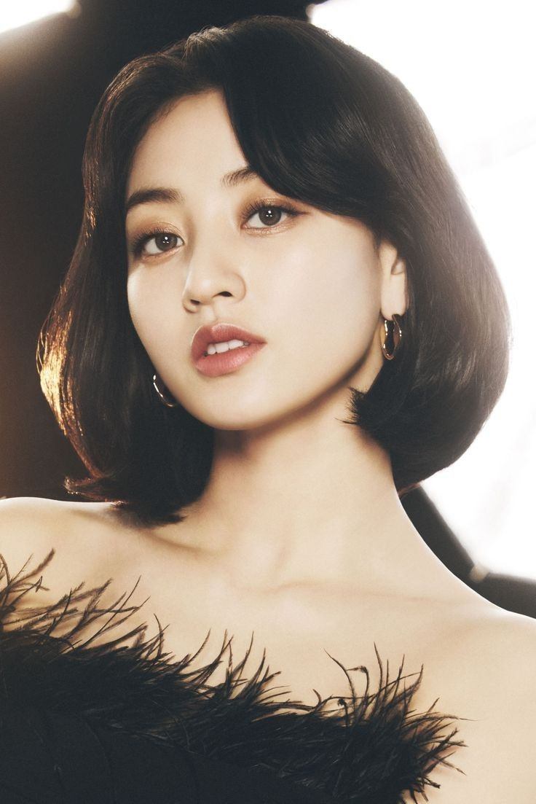
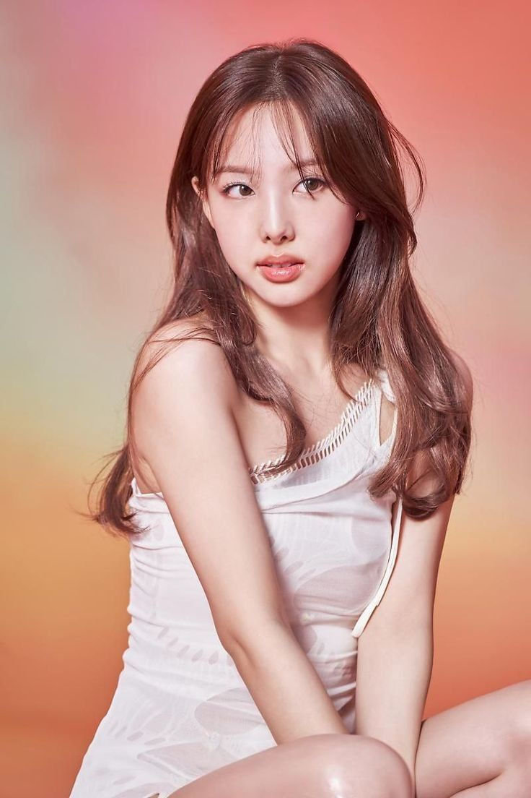
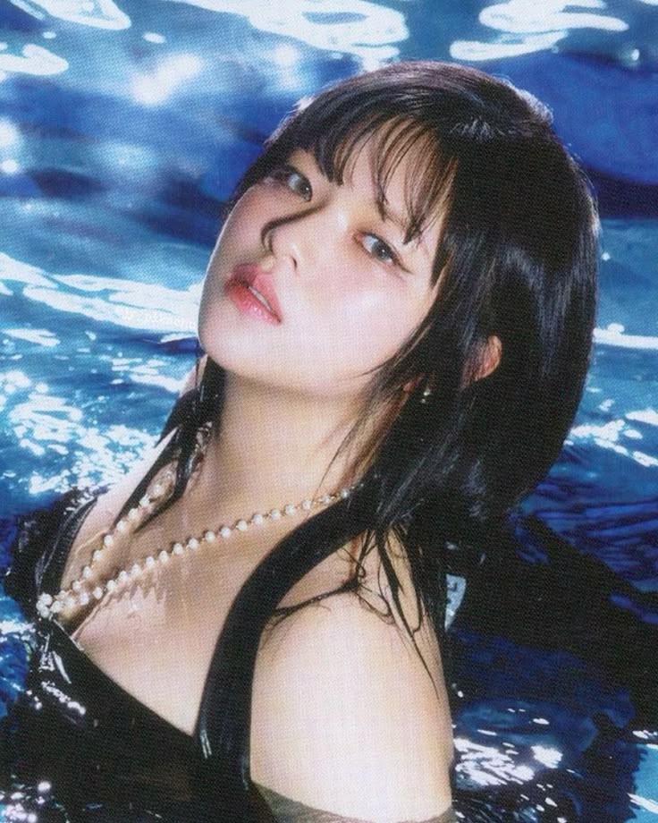
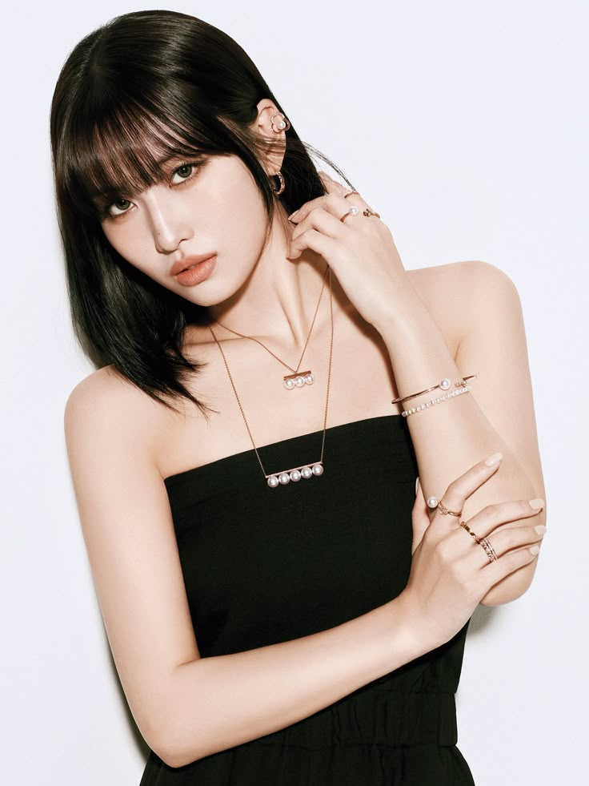
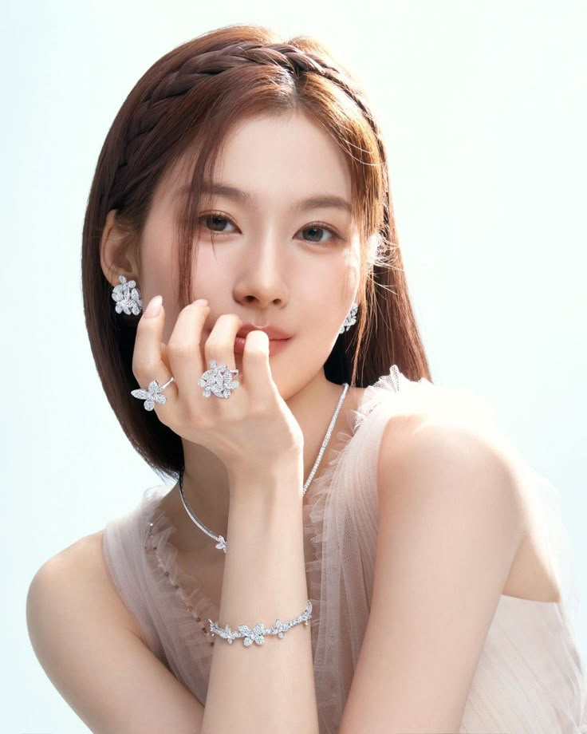
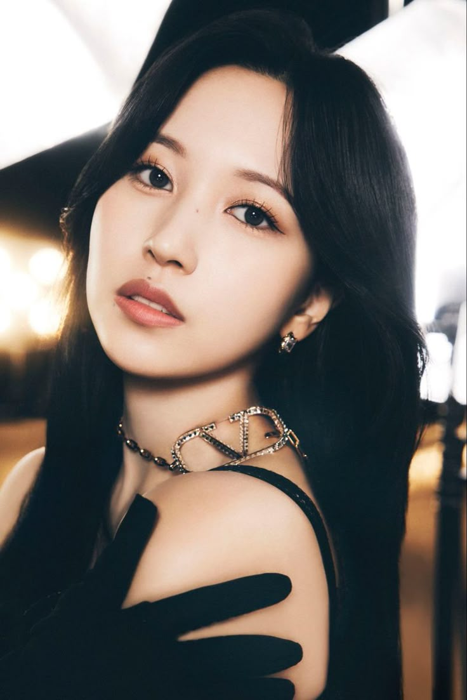
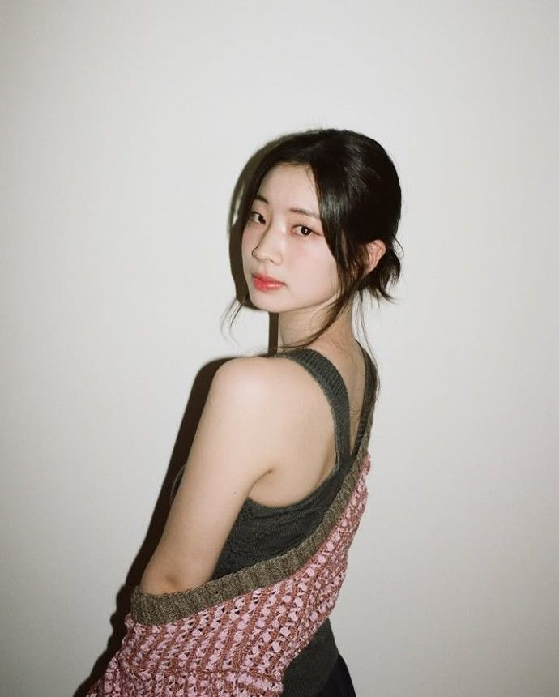
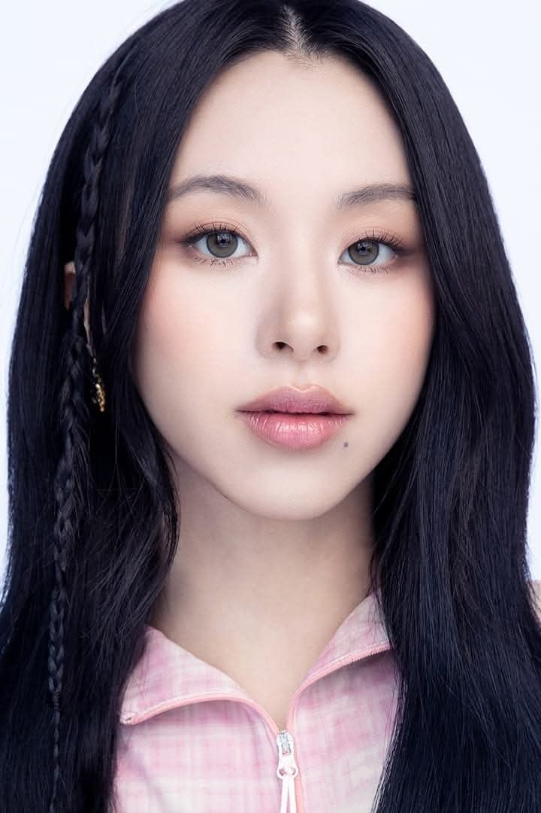
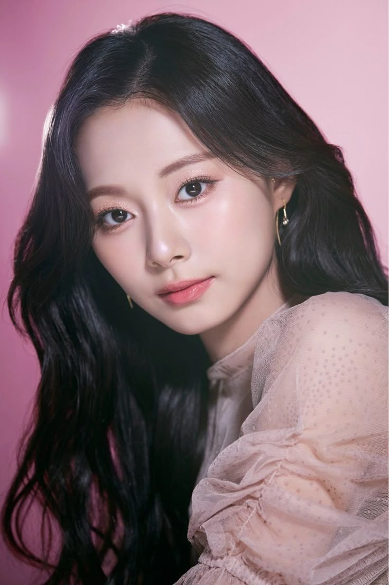

TWICE (트와이스) is a 9-member South Korean girl group under JYP Entertainment. The group consists of Jihyo, Nayeon, Jeongyeon, Momo, Sana, Mina, Dahyun, Chaeyoung, and Tzuyu. The group was formed through the survival show SIXTEEN and debuted on October 20, 2015, with their first mini album, The Story Begins. Group Name Meaning: As stated by J. Y. Park, “The group will touch people’s hearts twice, once through the ears, and once again through the eyes.” Official Greeting: “One in a million! Hello, we are TWICE!“
|  |
Position(s): Leader, Main Vocalist Birthdate: February 1, 1997 – She was born in Guri, South Korea. – She is the TWICE member who trained for the longest time. She trained for 10 years. – She was voted leader by the members, not JYPE (by anonymous voting). – Her favorite color is red. |
|  |
Position(s): Lead Vocalist, Lead Dancer, Center, Face of the Group Birthdate: September 22, 1995 – She was born in Myeongil-dong, Gangdong-gu, Seoul, South Korea. – She is the oldest member. – Her favorite color is purple. |
|  |
Position(s): Lead Vocalist Birthdate: November 1, 1996 – She was born in Jeonja-dong, Jangan, Suwon, South Korea. – Her father, Yoo Changjoon, is a popular Korean traditional chef. – She chose 0 as her favorite number, because she doesn’t actually have a favorite number. |
|  |
Position(s): Main Dancer, Sub-Vocalist, Sub-Rapper Birthdate: November 9, 1996 – She was born in Kyōtanabe, Kyoto, Japan. – She was scouted by JYP Entertainment after they saw a dance video of her and her older sister. – Her name means “peach” in Japanese |
|  |
Position(s): Sub-Vocalist Birthdate: December 29, 1996 – She was born in Tennōji-ku, Osaka, Japan. – She is an only child. – She got casted while she was shopping with her friends. – She passed the audition on April 13, 2012. |
|  |
Position(s): Main Dancer, Sub-Vocalist Birthdate: March 24, 1997 – She was born in San Antonio, Texas, USA. – Her parents are both Japanese. – She moved to Kobe, Japan when she was a toddler. |
|  |
Position(s): Lead Rapper, Sub-Vocalist Birthdate: May 28, 1998 – She was born in Eunhaeng-dong, Jungwon-gu, Seongnam, South Korea. – In middle school, she performed a solo in a youth dance festival and was scouted by JYP Entertainment. – She passed the audition on July 7, 2012, and officially became a trainee |
|  |
Position(s): Main Rapper, Sub-Vocalist Birthdate: April 23, 1999 – She was born in Dunchon-dong, Gangdong, Seoul, South Korea. – She has a younger brother, Jeonghun, born in 2000, who is an aspiring model. – She passed the audition on June 6, 2012. |
|  |
Position(s): Lead Dancer, Sub-Vocalist, Visual, Maknae Birthdate: June 14, 1999 – She was born in Tainan, Taiwan. – She is the tallest member in the group. – She was discovered by JYPE at the MUSE Performing Arts Workshop in Tainan in 2012, and she went to South Korea on November 15, 2012, to start her training. |